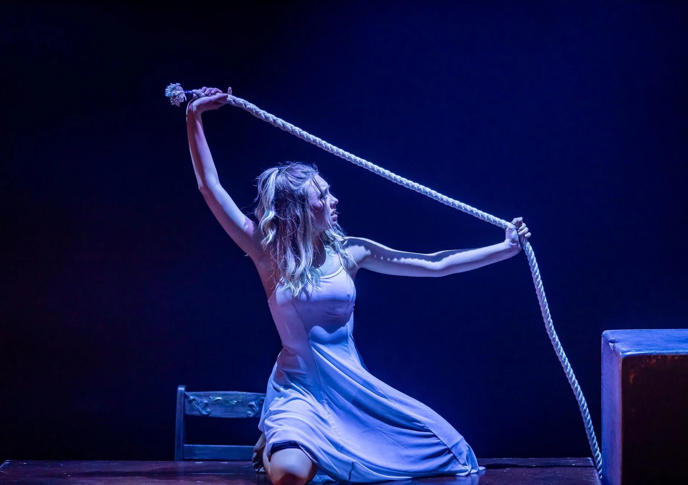
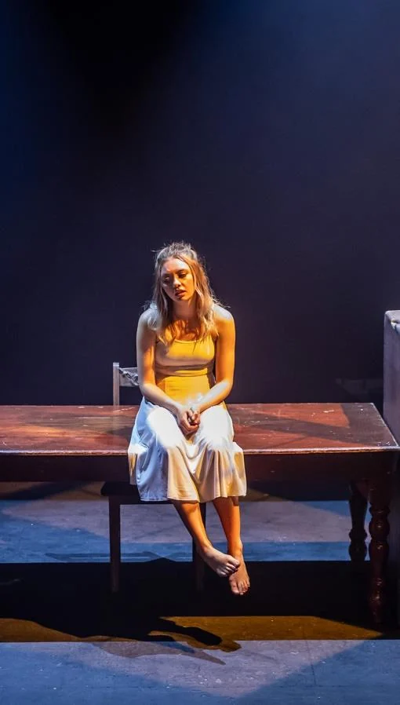
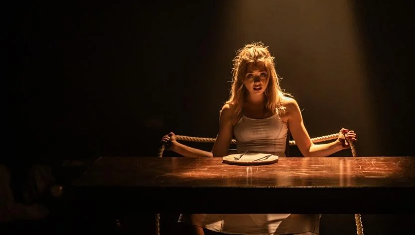

When am I?
Solo Performance · 2025

When am I? is a solo performance written, directed and performed by Sophie Mollison. Across four poems, the performer moves through control, uncertainty and recollection. I designed the light around the time it takes for one state to give way to another.
A recurring square of light gives the audience a point of reference as colour and pace change around it. A quick shift can mark the end of a poem. A slow fade can let its feeling carry into the next one. The design pays as much attention to how long a light state lasts as to how it looks.
- Role
- Lighting Design
- Medium
- Stage Lighting, Spoken Word, Live Performance
- Location
- Barn Theatre
Light between the poems
I designed the lighting for Sophie Mollison’s solo performance. The opening image is a square of deep blue that turns cold white. It returns between the four poems to give each scene room to settle.
I used a warm window gobo and a lingering Fresnel fade later in the piece, then adjusted the existing rig in rehearsal to follow the performer’s movement.




Credits
- Lighting design
- Yun Deng
- Director, writer and performer
- Sophie Mollison
- Lighting programmer
- Jack Gibson
- Head of lighting
- Isabel Wolf
- Stage manager
- Ellie Warne
- Rehearsal photography
- Graham Baker Photography